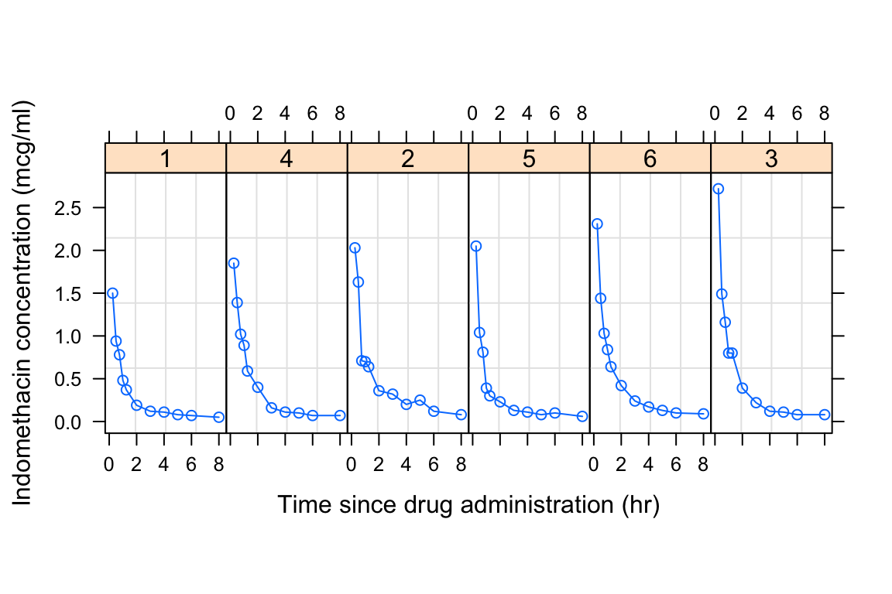

Chapter 2 Installation
2.1 Installing R
R is the computing language we will use to run our chemometric analyses and produce high quality plots. If you already have R installed, you can go straight to installing RStudio. If not, follow these steps to install R:
- Go to https://cran.r-project.org/
- Click on “Download R for <your operating system>” (see footnote), depending on your operating system you will select “Download R for Linux”, “Download R for (Mac) OS X”, or “Download R for Windows”.
footnote: We will use <this notation> quite a bit. It indicates a place where you should insert information, data, or something similar that corresponds to your particular situation. In this example it means insert “your operating system”, i.e. Linux, (Mac) OS X, or Windows.
For Mac: download the .pkg file for the latest release. As of 8/31/2020, this is R-4.0.2.pkg. For PC: click “install R for the first time”, then click “Download R 4.0.2 for Windows”.
After the executable finishes downloading (in Windows, it is a file with .exe extension; for Mac, it is a .dmg file or a .dmg inside a .pkg file), open the file as an administrator, and follow the installation instructions. R should install without any problems. You can click OK for all of the windows that pop-up during installation, and choose a “regular” installation (if given the choice).
If you have trouble installing R please google “Install R Mac” or “Install R PC” and following one the many video tutorials out there. If you have tried this and are still having trouble, please contact me.
2.2 Installing RStudio
Once we install R, we can install RStudio, which is essentially a convenient way of interacting with R. Some people do not like RStudio and prefer to interact with R directly. This is fine, but many beginning R users find RStudio helpful, so I recommend it. Follow these steps to install RStudio:
- Go to https://rstudio.com/
- Click “DOWNLOAD” at the top of the page.
- Click the “DOWNLOAD” button that corresponds to RStudio Desktop with the free Open Source License.
- The page may automatically detect which operating system you are using and recommend a version for you. If it does, download that file (.exe for PC or .dmg for Mac). If not, scroll down to the “All Installers” section and download the file that is right for you. Open the file as an administrator, and follow the installation instructions. RStudio should install without any problems. You can click OK for all of the windows that pop-up during installation, and choose a “regular” installation (if given the choice).
If you have trouble installing RStudio please google “Install RStudio Mac” or “Install RStudio PC” and following one the many video tutorials out there. If you have tried this and are still having trouble, please contact me.
2.3 Verifying installations
Open RStudio by clicking on the appropriate file in your applications folder, or wherever it is saved on your computer. You will see several windows. One is the Code Editor, one is the R Console, one is the Workspace and History, and one is the Plots and Files window.

The R Console window should have a > in it. Type head(Indometh). This should display the first six lines of a data set describing the pharmacokinets of indomethacin. This is one of the built in datasets in R - you do not need any additional files to run this test.
head(Indometh)
## # A tibble: 6 x 3
## Subject time conc
## <ord> <dbl> <dbl>
## 1 1 0.25 1.5
## 2 1 0.5 0.94
## 3 1 0.75 0.78
## 4 1 1 0.48
## 5 1 1.25 0.37
## 6 1 2 0.19Next, type plot(Indometh) into the R Console. This will plot the indomethacin dataset in a basic way.

If both the above commands (head(Indometh) and plot(Indometh)) worked and there were no error messages during installation, then you should be ready to proceed.
2.4 Installing the tidyverse
For us to run our analyses, we need to install a set of add-on functions that expand R’s capabilities. These functions are collected in something called the tidyverse, a very well-known and widely-used R package developed by Hadley Wickham. You do not need to manually download anything to complete this installation - R will do it for you. In the R Console, type install.packages("tidyverse", repos = "http://cran.us.r-project.org") to install the tidyverse. RSudio might ask you: “Do you want to install from sources the packages which need compilation? (Yes/no/cancel)”, for now, type no and press enter.
install.packages("tidyverse", repos = "http://cran.us.r-project.org")
##
## The downloaded binary packages are in
## /var/folders/d4/m9ll00q10hdd6kz0vk9q0nx80000gn/T//RtmpExJdaJ/downloaded_packagesLet’s make sure your version of the tidyverse is installed correctly. To do this, we will load the tidyverse library/package inside of an R session. We can do this using library(tidyverse). Let’s try it:
library(tidyverse)
## ── Attaching packages ────────────────────────────────────────────────────────────────────── tidyverse 1.3.0 ──
## ✓ ggplot2 3.2.1 ✓ purrr 0.3.3
## ✓ tibble 2.1.3 ✓ dplyr 0.8.4
## ✓ tidyr 1.0.2 ✓ stringr 1.4.0
## ✓ readr 1.3.1 ✓ forcats 0.4.0
## ── Conflicts ───────────────────────────────────────────────────────────────────────── tidyverse_conflicts() ──
## x dplyr::filter() masks stats::filter()
## x dplyr::lag() masks stats::lag()If the library load correctly - then you are set to go! If not, try updating your R / RStudio installations, the reinstalling the tidyverse. If this still fails, please contact me.